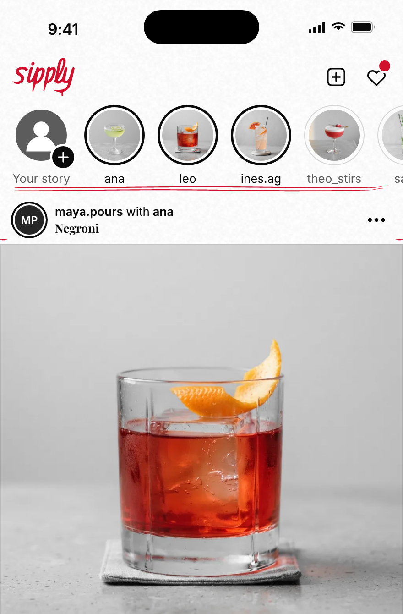
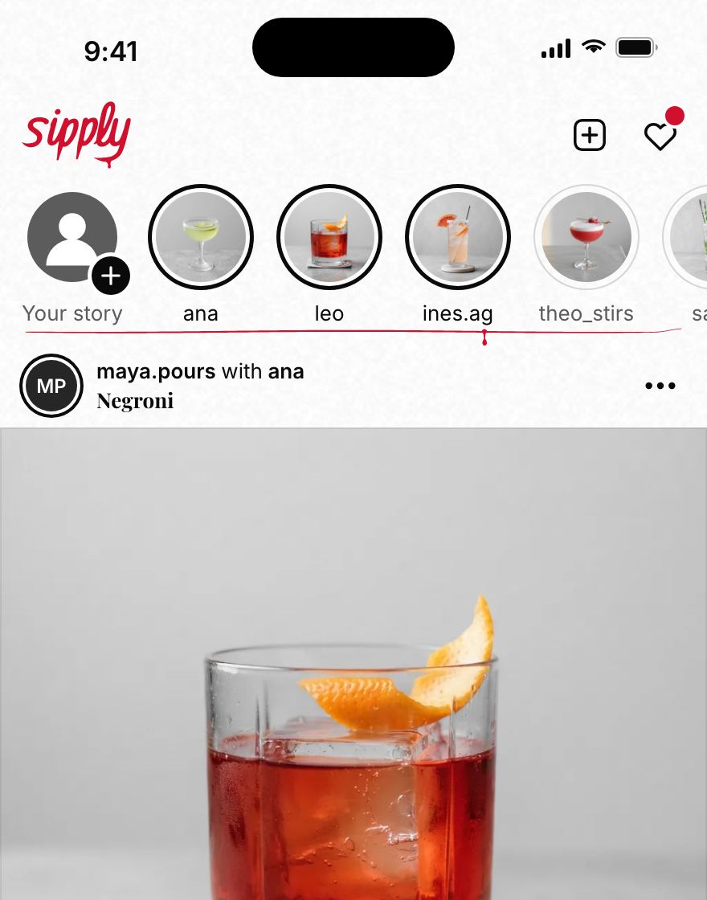
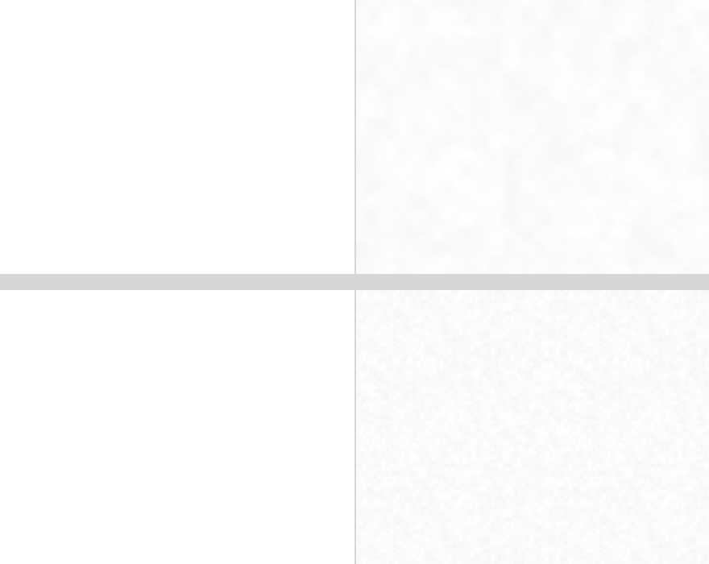

<!doctype html>
<html lang="en">
<head>
<meta charset="utf-8">
<meta name="viewport" content="width=device-width, initial-scale=1">
<title>Sipply v4.9 details</title>
<style>
@font-face{font-family:Inter;src:url(../../../../assets/fonts/InterLatin_400Regular.ttf);font-weight:400}
@font-face{font-family:Inter;src:url(../../../../assets/fonts/InterLatin_500Medium.ttf);font-weight:500}
@font-face{font-family:Inter;src:url(../../../../assets/fonts/InterLatin_600SemiBold.ttf);font-weight:600}
@font-face{font-family:Playfair;src:url(../../../../assets/fonts/PlayfairDisplayLatin_700Bold.ttf);font-weight:700}

/* theme.ts, exactly. */
:root{
  --page:#FFFFFF; --wash:#F5F5F5; --press:#EBEBEB; --line:#E3E3E3; --hair:#D6D6D6; --rule:#C4C4C4;
  --control:#8A8A8A; --muted:#5C5C5C; --ink:#0A0A0A; --onInk:#FFFFFF;
  --photoEdge:rgba(10,10,10,.07); --acc:#D0102C;
  --t1:#262626; --t2:#3D3D3D; --t3:#5C5C5C;
}
*{box-sizing:border-box;margin:0;padding:0}
html,body{background:#ECECEC}
body{font-family:Inter,system-ui,sans-serif;color:var(--ink);-webkit-font-smoothing:antialiased}
svg{display:block;overflow:visible}
b{font-weight:600}

.title{font:600 28px/34px Inter;letter-spacing:-.4px}
.body{font:400 17px/24px Inter;letter-spacing:-.2px}
.bm{font:500 17px/24px Inter;letter-spacing:-.2px}
.bs{font:600 17px/24px Inter;letter-spacing:-.2px}
.small{font:400 13px/18px Inter}
.s5{font:500 13px/18px Inter}
.s6{font:600 13px/18px Inter}
.pf{font:700 17px/24px Playfair;letter-spacing:-.2px}
.pfs{font:700 13px/18px Playfair}
.hero{font:700 52px/56px Playfair;letter-spacing:-.6px}
.plate{font:500 13px/18px Inter;letter-spacing:1px;font-variant-numeric:tabular-nums}
.muted{color:var(--muted)} .tn{font-variant-numeric:tabular-nums} .ink{color:var(--ink)}
.c{text-align:center}
.nw{white-space:nowrap}

.a{position:absolute}
.mk{position:absolute;overflow:visible;pointer-events:none}
.phone{position:relative;width:440px;height:956px;background:var(--page);overflow:hidden;flex:none;isolation:isolate}
.paper{position:absolute;inset:0;background:url(assets/paper@2x.png) 0 0/128px 128px repeat;pointer-events:none}
.chrome{position:absolute;left:0;right:0;background:var(--page);z-index:20}
.chrome.paperd{background:url(assets/paper@2x.png) 0 0/128px 128px repeat, var(--page)}
.circle{border-radius:50%}
.sb{position:absolute;top:0;left:0;right:0;height:62px;z-index:30}
.sb .t{position:absolute;left:52px;top:21px;font:600 17px/22px Inter;letter-spacing:-.2px}
.sb .island{position:absolute;left:157px;top:11px;width:126px;height:37px;border-radius:19px;background:#000}
.homeInd{position:absolute;left:150px;top:942px;width:140px;height:5px;border-radius:3px;background:var(--ink);z-index:40}

.print{position:absolute;overflow:hidden;background:var(--wash)}
.print img{display:block;width:100%;height:100%;object-fit:cover}
.print::after{content:"";position:absolute;inset:0;box-shadow:inset 0 0 0 1px var(--photoEdge);pointer-events:none}
.r2{border-radius:2px}.r2::after{border-radius:2px}
.av{position:absolute;border-radius:50%;display:flex;align-items:center;justify-content:center;color:#fff;font-weight:600;overflow:hidden}
.av img{width:100%;height:100%;object-fit:cover}

.key{position:absolute;border-radius:4px;display:flex;align-items:center;justify-content:center;white-space:nowrap;font:500 17px/24px Inter;letter-spacing:-.2px;gap:8px}
.key.wash{background:var(--wash);color:var(--ink)}
.key.ink{background:var(--ink);color:#fff}
.key.acc{background:var(--acc);color:#fff}
.chip{position:absolute;height:32px;display:flex;align-items:center;gap:6px;padding:0 12px;border-radius:4px;box-shadow:inset 0 0 0 1px var(--hair);font:500 13px/18px Inter;white-space:nowrap;background:var(--page)}
.chip.sort{background:var(--wash);box-shadow:none;padding:0 10px 0 12px;gap:4px}
.field{position:absolute;left:24px;width:392px;height:44px;border-radius:4px;background:var(--wash)}

/* ---------- the wall ---------- */
.wall{padding:40px 44px 60px}
.wall h1{font:600 34px/40px Inter;letter-spacing:-.8px}
.wall .lede{font:400 16px/25px Inter;color:#333;margin-top:10px;max-width:1320px}
.wall .lede b{color:var(--ink)}
.wall h2{font:600 22px/28px Inter;letter-spacing:-.4px;margin:44px 0 6px}
.wall h2 small{font:400 14px/20px Inter;color:#555;margin-left:10px;letter-spacing:0}
.row{display:flex;gap:28px;flex-wrap:wrap;margin-top:16px}
.frame{display:flex;flex-direction:column;gap:10px;width:440px;flex:none}
.frame .phone{box-shadow:0 1px 2px rgba(0,0,0,.06),0 10px 30px rgba(0,0,0,.08)}
.cap{font:400 13px/19px Inter;color:#444}
.cap b{color:var(--ink)}
.sheet{position:relative;background:#fff;box-shadow:0 1px 2px rgba(0,0,0,.06),0 10px 30px rgba(0,0,0,.08)}

body.solo{background:var(--page)}
body.solo .wall{padding:0}
body.solo .wall>*{display:none}
body.solo .wall>.solo{display:flex;gap:0;margin:0}
body.solo .frame{gap:0}
body.solo .frame .cap{display:none}
body.solo .frame .phone{box-shadow:none}
body.solo .sheet{box-shadow:none}
body.pairs .wall>.solo{gap:20px;padding:20px;background:#ECECEC}
body.pairs .frame .cap{display:block;font-size:15px}
</style>
</head>
<body>
<div class="wall" id="wall"></div>
<script src="marks.js"></script>
<script>
/* ==================================================================== */
/* Sipply v4.9 details: the board                                       */
/*                                                                      */
/* Every mark is M('<spec>', x, y): path data that tools/build-marks.mjs */
/* generated from the app's own penPath.ts (rules, swash, drip) and     */
/* this folder's generators (doodles, frames, numerals). x, y place the */
/* mark's NOMINAL box, as the app's components do; the ink's offset is  */
/* the box's. Geometry is the spec's (spec.md), at 440 x 956.            */
/* ==================================================================== */
const A = '../../../../assets/';
const IMG = (id) => `${A}drinks/${id}.webp`;
const PROOF = (id) => `${A}drinks/proof/${id}.webp`;
const MK = window.MARKS;
const NEW = { on: true };
let VARIANT = new URLSearchParams(location.search).get('v') || 'anti';
const CORNERS = VARIANT !== 'ticks'; // flipped off to draw "before" (today's marks only)

/** Place a mark's nominal box at (x, y). o: fill, rot (deg, about the ink's centre), draw (0..1 clip), z. */
function M(spec, x, y, o = {}) {
  const m = MK[spec];
  if (!m) return `<div class="a" style="left:${x}px;top:${y}px;color:#f0f;font:10px Inter">missing ${spec}</div>`;
  const { x: bx, y: by, w, h } = m.box;
  const fill = o.fill || (m.tier === 'press' ? 'var(--rule)' : m.tier === 'fill' ? 'var(--wash)' : 'var(--acc)');
  const paths = m.d.map((d) => `<path d="${d}" fill="${fill}"/>`).join('');
  const z = o.z != null ? `z-index:${o.z};` : '';
  if (o.draw != null) {
    // The draw-on, as DrawOn does it: a window from the left, the ink standing still.
    return `<div class="a" style="left:${x + bx}px;top:${y + by}px;width:${w * o.draw}px;height:${h}px;overflow:hidden;${z}"><svg class="mk" viewBox="${bx} ${by} ${w} ${h}" style="left:0;top:0;width:${w}px;height:${h}px">${paths}</svg></div>`;
  }
  const rot = o.rot ? `transform:rotate(${o.rot}deg);` : '';
  return `<svg class="mk" viewBox="${bx} ${by} ${w} ${h}" style="left:${x + bx}px;top:${y + by}px;width:${w}px;height:${h}px;${rot}${z}">${paths}</svg>`;
}
/** Only in the new language. */
const N = (s) => (NEW.on ? s : '');

/** The wordmark, `h` pt tall, its box's top-left at (x, y). */
function WM(x, y, h) {
  const m = MK.wordmark;
  const { x: bx, y: by, w: bw, h: bh } = m.box;
  const w = (h * bw) / bh;
  return `<svg class="mk" viewBox="${bx} ${by} ${bw} ${bh}" style="left:${x}px;top:${y}px;width:${w}px;height:${h}px">${m.d.map((d) => `<path d="${d}" fill="var(--acc)"/>`).join('')}</svg>`;
}

/* ---------- glyphs: src/components/icons.tsx ---------- */
const OUT = {
  home: '<path d="M3.2 10.4 12 3.4l8.8 7"/><path d="M5.4 9.3V19.4a1.6 1.6 0 0 0 1.6 1.6h10a1.6 1.6 0 0 0 1.6-1.6V9.3"/><path d="M9.6 21V14.9h4.8V21"/>',
  dex: '<path d="M3.9 5.4h16.2l-8.1 8.3z"/><path d="M12 13.7v5.5"/><path d="M8.3 19.6h7.4"/>',
  search: '<circle cx="10.8" cy="10.8" r="6.4"/><path d="M15.5 15.5 20.4 20.4"/>',
  sliders: '<path d="M4 7.5h9.2"/><path d="M17.8 7.5H20"/><path d="M4 16.5h2.7"/><path d="M11.3 16.5H20"/><circle cx="15.5" cy="7.5" r="2.3"/><circle cx="9" cy="16.5" r="2.3"/>',
  chevronLeft: '<path d="M14.6 5.4 8 12l6.6 6.6"/>',
  chevronRight: '<path d="M9.4 5.4 16 12l-6.6 6.6"/>',
  chevronDown: '<path d="M5.4 9.4 12 16l6.6-6.6"/>',
  plus: '<path d="M12 5.2v13.6"/><path d="M5.2 12h13.6"/>',
  check: '<path d="M5 12.6 9.8 17.4 19 6.9"/>',
  heart: '<path d="M12 20.3 4.9 13.4a4.3 4.3 0 0 1 0-6.2 4.5 4.5 0 0 1 6.3 0l.8.8.8-.8a4.5 4.5 0 0 1 6.3 0 4.3 4.3 0 0 1 0 6.2z"/>',
  send: '<path d="M2.9 10.9 21.1 4.9 9.1 13.1z"/><path d="M9.1 13.1 21.1 4.9 12.6 19.1z"/>',
  bookmark: '<path d="M6.4 4.6h11.2v15.8L12 16.3l-5.6 4.1z"/>',
  create: '<rect x="3.6" y="3.6" width="16.8" height="16.8" rx="4"/><path d="M12 8v8"/><path d="M8 12h8"/>',
  more: '<circle cx="5.4" cy="12" r="1.15"/><circle cx="12" cy="12" r="1.15"/><circle cx="18.6" cy="12" r="1.15"/>',
  users: '<circle cx="9.4" cy="8.4" r="3.4"/><path d="M3.4 20.1a6.2 6.2 0 0 1 12 0"/><path d="M16.1 5.4a3.4 3.4 0 0 1 0 6.6"/><path d="M17.6 14.6a6.2 6.2 0 0 1 3 5.5"/>',
  alert: '<circle cx="12" cy="12" r="8.7"/><path d="M12 7.7v5.1"/><path d="M12 16.3h.01"/>',
  trophy: '<path d="M7.4 4.4h9.2v5.1a4.6 4.6 0 0 1-9.2 0z"/><path d="M7.4 5.9H5a1.4 1.4 0 0 0-1.4 1.4 3.6 3.6 0 0 0 3.6 3.6"/><path d="M16.6 5.9H19a1.4 1.4 0 0 1 1.4 1.4 3.6 3.6 0 0 1-3.6 3.6"/><path d="M12 14.1v3.4"/><path d="M8.4 20.2a3.6 3.6 0 0 1 7.2 0z"/>',
};
const SOLID = {
  home: '<path fill-rule="evenodd" d="M12 2.7a1.4 1.4 0 0 1 .9.3l8.3 6.6a1.4 1.4 0 0 1 .5 1.1v8.7a2.2 2.2 0 0 1-2.2 2.2h-4.6v-5.7a1 1 0 0 0-1-1h-3.8a1 1 0 0 0-1 1v5.7H4.5a2.2 2.2 0 0 1-2.2-2.2v-8.7a1.4 1.4 0 0 1 .5-1.1l8.3-6.6a1.4 1.4 0 0 1 .9-.3z"/>',
  dex: '<path d="M3.5 5.1a.5.5 0 0 0-.36.85l8.5 8.7a.5.5 0 0 0 .72 0l8.5-8.7a.5.5 0 0 0-.36-.85z"/><path d="M11.1 14.6h1.8v4.3h2.8a.9.9 0 0 1 0 1.8H8.3a.9.9 0 0 1 0-1.8h2.8z"/>',
  bookmark: '<path d="M6.4 4.6a.9.9 0 0 0-.9.9v14.9a.9.9 0 0 0 1.42.73L12 17.4l5.08 3.73a.9.9 0 0 0 1.42-.73V5.5a.9.9 0 0 0-.9-.9z"/>',
  heart: '<path d="M12 20.9a1 1 0 0 1-.68-.27l-6.9-6.7a5.1 5.1 0 0 1 0-7.4 5.4 5.4 0 0 1 7.58 0 5.4 5.4 0 0 1 7.58 0 5.1 5.1 0 0 1 0 7.4l-6.9 6.7a1 1 0 0 1-.68.27z"/>',
  trophy: '<path d="M7.4 4.4h9.2v5.1a4.6 4.6 0 0 1-9.2 0z"/><path d="M11.1 14v3.5h1.8V14z"/><path d="M12 16.6a3.6 3.6 0 0 0-3.6 3.6h7.2a3.6 3.6 0 0 0-3.6-3.6z"/><g fill="none" stroke="currentColor" stroke-width="2.15" stroke-linecap="round" stroke-linejoin="round"><path d="M7.4 5.9H5a1.4 1.4 0 0 0-1.4 1.4 3.6 3.6 0 0 0 3.6 3.6"/><path d="M16.6 5.9H19a1.4 1.4 0 0 1 1.4 1.4 3.6 3.6 0 0 1-3.6 3.6"/></g>',
};
function I(name, x, y, size = 26, color = 'var(--ink)', filled = false) {
  const solid = filled && SOLID[name];
  const fill = name === 'more';
  const body = solid
    ? `<g fill="${color}" color="${color}">${SOLID[name]}</g>`
    : `<g stroke="${color}" stroke-width="${filled ? 2.15 : 1.6}" stroke-linecap="round" stroke-linejoin="round" fill="${fill ? color : 'none'}">${OUT[name]}</g>`;
  return `<svg class="a" width="${size}" height="${size}" viewBox="0 0 24 24" style="left:${x}px;top:${y}px">${body}</svg>`;
}
const t = (html, x, y, cls = 'body', style = '') => `<div class="a ${cls}" style="left:${x}px;top:${y}px;${style}">${html}</div>`;
const tr = (html, right, y, cls = 'body', style = '') => `<div class="a ${cls}" style="right:${440 - right}px;top:${y}px;text-align:right;${style}">${html}</div>`;
const tc = (html, cx, y, w, cls = 'body', style = '') => `<div class="a ${cls} c" style="left:${cx - w / 2}px;width:${w}px;top:${y}px;${style}">${html}</div>`;
const pr = (src, x, y, w, h, cls = '') => `<div class="print ${cls}" style="left:${x}px;top:${y}px;width:${w}px;height:${h}px"></div>`;
const TONES = ['var(--t1)', 'var(--t2)', 'var(--t3)'];
const av = (ini, x, y, s, tone = 0, img = '') =>
  `<div class="av" style="left:${x}px;top:${y}px;width:${s}px;height:${s}px;background:${TONES[tone]};font-size:${Math.round(s * 0.36)}px">${img ? `` : ini}</div>`;

/* ---------- the phone's own chrome ---------- */
function statusBar() {
  return `<div class="sb"><div class="t">9:41</div><div class="island"></div>
  <svg class="a" style="left:337px;top:24px" width="18" height="12" viewBox="0 0 18 12"><rect x="0" y="8" width="3" height="4" rx="1" fill="#0A0A0A"/><rect x="5" y="5.5" width="3" height="6.5" rx="1" fill="#0A0A0A"/><rect x="10" y="3" width="3" height="9" rx="1" fill="#0A0A0A"/><rect x="15" y="0" width="3" height="12" rx="1" fill="#0A0A0A"/></svg>
  <svg class="a" style="left:361px;top:24px" width="17" height="12" viewBox="0 0 17 12"><path d="M8.5 2.2c2.5 0 4.8 1 6.5 2.6l1.2-1.3C14.2 1.6 11.5.5 8.5.5S2.8 1.6.8 3.5L2 4.8c1.7-1.6 4-2.6 6.5-2.6z" fill="#0A0A0A"/><path d="M8.5 5.6c1.6 0 3 .6 4.1 1.6l1.2-1.3C12.4 4.6 10.5 3.9 8.5 3.9S4.6 4.6 3.2 5.9l1.2 1.3c1.1-1 2.5-1.6 4.1-1.6z" fill="#0A0A0A"/><path d="M8.5 9 10.9 6.5c-.7-.5-1.5-.9-2.4-.9s-1.7.3-2.4.9z" fill="#0A0A0A"/></svg>
  <svg class="a" style="left:383px;top:23px" width="27" height="13" viewBox="0 0 27 13"><rect x=".5" y=".5" width="23" height="12" rx="3.5" fill="none" stroke="#0A0A0A" opacity=".35"/><rect x="2" y="2" width="20" height="9" rx="2" fill="#0A0A0A"/><path d="M25 4.5v4c.8-.3 1.5-1.1 1.5-2s-.7-1.7-1.5-2z" fill="#0A0A0A" opacity=".4"/></svg></div>`;
}
const homeInd = () => '<div class="homeInd"></div>';

/** The tab bar: Home · Tournaments · the Dex key · Saved · Profile (FloatingTabBar). */
function tabBar(active) {
  const cy = 897.5;
  const g = (name, cx, on) => I(name, cx - 13, cy - 13, 26, on ? 'var(--ink)' : 'var(--muted)', on);
  const line = (cx, y = 913) => `<div class="a" style="left:${cx - 9}px;top:${y}px;width:18px;height:2px;background:var(--ink)"></div>`;
  let s = '';
  s += `<div class="chrome ${NEW.on ? 'paperd' : ''}" style="top:873px;height:83px"></div>`;
  const z = (html) => html.replace('class="a"', 'class="a" data-z').replace('style="', 'style="z-index:22;');
  s += z(g('home', 44, active === 'home'));
  s += z(g('trophy', 132, active === 'board'));
  s += `<div class="a" style="left:194px;top:${cy - 16}px;width:52px;height:32px;border-radius:4px;background:var(--acc);z-index:22"></div>`;
  s += z(I('dex', 209, cy - 11, 22, '#fff', active === 'dex'));
  s += z(g('bookmark', 308, active === 'saved'));
  s += `<div class="av" style="left:383px;top:${cy - 13}px;width:26px;height:26px;background:var(--t3);font-size:10px;z-index:22">NP</div>`;
  if (active === 'profile') s += `<div class="a" style="left:379.5px;top:${cy - 16.5}px;width:33px;height:33px;border-radius:50%;box-shadow:inset 0 0 0 1.5px var(--ink);z-index:22"></div>`;
  const at = { home: 44, board: 132, dex: 220, saved: 308, profile: 396 }[active];
  if (at) s += line(at, active === 'dex' ? 916 : 914).replace('style="', 'style="z-index:22;');
  return s;
}

function phone(inner, { paper = NEW.on } = {}) {
  return `<div class="phone">${paper ? '<div class="paper"></div>' : ''}${statusBarWrap()}${inner}${homeInd()}</div>`;
}
const statusBarWrap = () => `<div class="chrome ${NEW.on ? 'paperd' : ''}" style="top:0;height:62px;z-index:25"></div>${statusBar()}`;

/* ---------- the lg bar (ScreenTopBar size lg): title at x 24, the swash under it ---------- */
function lgBar(title, right = '') {
  // Title line box 71..105 in the 52 row; swash box (56 x 6) at left 25, its bottom 4 under the foot: 103..109.
  return `<div class="chrome ${NEW.on ? 'paperd' : ''}" style="top:62px;height:52px"></div>
  <div class="a" style="left:0;top:0;width:440px;height:114px;z-index:21">${t(title, 24, 71, 'title nw')}${M('swash|56', 25, 103)}${right}</div>`;
}
function mdBar(title = '', right = '', rule = false) {
  return `<div class="chrome ${NEW.on ? 'paperd' : ''}" style="top:62px;height:52px;${rule ? 'box-shadow:inset 0 -1px 0 var(--line)' : ''}"></div>
  <div class="a" style="left:0;top:0;width:440px;height:114px;z-index:21">${I('chevronLeft', 15, 75, 26)}${title ? tc(title, 220, 76, 260, 'bs') : ''}${right}</div>`;
}

/* ==================================================================== */
/* Empty-state compositions (spec C.9)                                  */
/* ==================================================================== */
/*
 * BOLDER (28 Oct, the lead's pass on Jan's "still feels too empty"): every
 * composition is a small CLUSTER sized to fill the middle of the screen,
 * the doodles half as big again (art-led 1.5, icon-led 1.25, the olive 1.1),
 * drawn as ONE path by tools/doodles.mjs emptyCluster() from spec C.9's tables.
 */
/** Icon-led: around a 36pt glyph whose box is at (gx, gy): the cluster (tools/doodles.mjs ICON_CLUSTER), one path. */
const iconComp = (kind, gx, gy) => M(`cl|${kind}|icon`, gx, gy);
/** Art-led: around a 120 x 150 art print at (px, py): the corners and the cluster (ART_CLUSTER), one path. */
const artComp = (kind, px, py) => M(`cl|${kind}|art`, px, py);
/** The arrow (spec C.9), its frame the key's top-right corner (kx, ky): from (62, -24) round to (14, 24), bowed 14 to the right. */
const keyArrow = (kx, ky) => M('arrow|0|0|-48|48|-14', kx + 62, ky - 24);
/** A signed end mark (spec C.10): its nominal box's right edge on `right`, its top at `top`. Returns [html, height]. */
function endSig(name, rot, right, top) {
  const spec = `sig|${name}|${rot}`;
  const m = MK[spec];
  return [M(spec, right - m.w, top), m.nh];
}
/**
 * The optical place (spec C.9, O-3 adopted): the composition's top at 38%
 * of the free height between the list's header foot (top) and its bottom
 * padding (bottom), inside EmptyState's own 48 padding. h is the
 * composition's height without that padding.
 */
const optical = (top, bottom, h) => top + 48 + Math.round(0.38 * (bottom - top - 96 - h));

/* ==================================================================== */
/* Home                                                                 */
/* ==================================================================== */
const STORIES = [
  { n: 'Your story', me: true },
  { n: 'ana', img: 'daiquiri' },
  { n: 'leo', img: 'negroni' },
  { n: 'ines.ag', img: 'paloma' },
  { n: 'theo_stirs', img: 'clover-club', seen: true },
  { n: 'sam.', img: 'mojito', seen: true },
];
function homeBar() {
  return `<div class="chrome ${NEW.on ? 'paperd' : ''}" style="top:62px;height:44px"></div>
  <div class="a" style="left:0;top:0;width:440px;height:106px;z-index:21">${WM(13.7, 63, 42)}${I('create', 354, 71, 26)}${I('heart', 398, 71, 26)}
  <div class="a" style="left:414px;top:66px;width:12px;height:12px;border-radius:50%;background:var(--acc);box-shadow:0 0 0 2px #fff"></div></div>`;
}
function tray(list = STORIES) {
  let s = '';
  list.forEach((st, i) => {
    const cx = 45 + 80 * i;
    const cy = 147.5;
    if (st.me) {
      s += `<div class="av" style="left:${cx - 28}px;top:${cy - 28}px;width:56px;height:56px;background:var(--t3)"><svg width="56" height="56" viewBox="0 0 24 24"><circle cx="12" cy="9.2" r="3.6" fill="#fff"/><path d="M5 19.6a7 7 0 0 1 14 0z" fill="#fff"/></svg></div>`;
      s += `<div class="a circle" style="left:${cx + 12}px;top:${cy + 12}px;width:24px;height:24px;background:var(--ink);box-shadow:0 0 0 2.5px #fff"></div>${I('plus', cx + 15, cy + 15, 18, '#fff', true)}`;
    } else if (st.find) {
      s += `<div class="a circle" style="left:${cx - 30}px;top:${cy - 30}px;width:60px;height:60px;box-shadow:inset 0 0 0 1px var(--hair)"></div>${I('plus', cx - 12, cy - 12, 24, 'var(--ink)')}`;
    } else {
      s += `<div class="a circle" style="left:${cx - 33}px;top:${cy - 33}px;width:66px;height:66px;box-shadow:inset 0 0 0 ${st.seen ? '1px var(--hair)' : '2.5px var(--ink)'}"></div>`;
      s += `<div class="av" style="left:${cx - 28}px;top:${cy - 28}px;width:56px;height:56px;background:var(--wash)"></div>`;
    }
    s += tc(st.n, cx, 186, 80, 'small nw', st.me || st.seen ? 'color:var(--muted)' : '');
  });
  return s;
}
/** One feed post. top = its header's top. Returns [html, bottom]. */
function post(top, p, { closing = true } = {}) {
  const ph = top + 52;
  const pb = ph + 440;
  let s = '';
  // Header: face 32 at x 16 with a 2pt ink story ring.
  s += `<div class="a circle" style="left:12px;top:${top + 6}px;width:40px;height:40px;box-shadow:inset 0 0 0 2px ${p.ring ? 'var(--ink)' : 'transparent'}"></div>`;
  s += av(p.ini, 16, top + 10, 32, p.tone ?? 1);
  s += t(`<b>${p.user}</b>${p.with ? ` <span style="font-weight:400">with</span> <b>${p.with}</b>` : ''}`, 60, top + 8, 's6 nw');
  s += t(p.drink, 60, top + 26, 'pfs nw');
  s += I('more', 398, top + 13, 26, 'var(--ink)');
  // The photo, full bleed, square corners, the photoEdge inset.
  s += pr(IMG(p.img), 0, ph, 440, 440);
  // REJECTED (?v=ticks): trim ticks at the screen edges, 4.5pt off the photo. They read as a rendering fault.
  if (VARIANT === 'ticks') s += N(M('tick|8|1', 0, ph - 4.5 - 3.4) + M('tick|8|-1', 432, ph - 4.5 - 3.4) + M('tick|8|1', 0, pb + 4.5 - 3.4) + M('tick|8|-1', 432, pb + 4.5 - 3.4));
  // Actions 44: heart 7..51, share 51..95, bookmark 389..433.
  s += I('heart', 16, pb + 9, 26, p.liked ? 'var(--acc)' : 'var(--ink)', !!p.liked);
  s += I('send', 60, pb + 9, 26);
  s += I('bookmark', 398, pb + 9, 26);
  // Liked by
  s += av('', 16, pb + 46, 18, 2);
  s += t(`Liked by <b>${p.likedBy}</b> and <b>${p.others}</b>`, 42, pb + 46, 'small nw');
  // Caption
  const capLines = p.capLines ?? 1;
  s += `<div class="a small" style="left:16px;top:${pb + 68}px;width:408px">${p.caption}</div>`;
  const timeTop = pb + 68 + 18 * capLines + 2;
  s += t(p.time, 16, timeTop, 'small muted');
  const foot = timeTop + 18;
  // v4.9 crop corners: the POST is the print (its photo bleeds, so the corners frame the card it sits on):
  // the anti-diagonal pair, 8 in. Top right above the header (never on the first post, under the stories rule's
  // flick); bottom left as ONE stroke with the closing rule (crule), which replaces the rule where there is one.
  const bottom = foot + 14;
  const anti = CORNERS && NEW.on;
  // Bolder pass: both corners' arms are 15 (were 10), the pen at 1.45.
  if (anti && !p.first) s += M('crop|15|15|15|0|tr', 440 - 8 - 15, top + 3);
  if (closing) s += anti ? M('crule', 8, bottom - 3 - 15) : M('rule|24|1', 16, foot + 11 - 3.4);
  return [s, bottom];
}

const P1 = { first: true, user: 'maya.pours', with: 'ana', ini: 'MP', tone: 0, ring: true, drink: 'Negroni', img: 'negroni', liked: true, likedBy: 'ines.ag', others: '23 others', caption: '<b>maya.pours</b> Leo’s recipe, in his kitchen. Equal parts, stirred long.', time: '2 hours ago' };
const P2 = { user: 'leo', ini: 'L', tone: 1, ring: true, drink: 'Daiquiri', img: 'daiquiri', likedBy: 'maya.pours', others: '9 others', caption: '<b>leo</b> Shaken till the tin hurt.', time: '5 hours ago' };
const P3 = { user: 'ines.ag', ini: 'IA', tone: 2, ring: false, drink: 'Paloma', img: 'paloma', likedBy: 'leo', others: '4 others', caption: '<b>ines.ag</b> Salt on half the rim, grapefruit soda from the corner shop. Summer, in a highball.', capLines: 2, time: '3 days ago' };

/**
 * The stories head rule: PenRule 408, seed 0, centreline 14 under the names' baseline. v4.9's bolder pass DOUBLES it
 * (the board's and the spec's double rule: the page's two halves, stories and feed), its box 2 higher so the lower
 * stroke keeps 12.4 off the first post's ring. REJECTED (?v=drip): the rule with one drip, which read as a pointer
 * under one story, a state.
 */
const storiesRule = () =>
  !NEW.on ? M('rule|408|0', 16, 203) : VARIANT === 'drip' ? M('drule|408|0', 16, 203) : VARIANT === 'single' ? M('rule|408|0', 16, 203) : M('dbl|408|0', 16, 201);
function homeAtRest() {
  let s = homeBar() + tray();
  s += storiesRule();
  const [p1, b1] = post(214, P1);
  const [p2] = post(b1, P2);
  return phone(s + p1 + p2 + tabBar('home'));
}
function homeEnd() {
  // Scrolled to the foot: Home's bar has slid away; the last post, the end mark, the footer.
  let s = '';
  // Scrolled so the footer clears the tab bar: the post above has gone under the status strip.
  const [p3, b3] = post(NEW.on ? 62 : 96, P3);
  s += p3;
  // v4.9 end mark, SIGNED (bolder pass): Home's coupe at 1.2 and the swash under it, the footer's first child: 18 under
  // the last post (the footer's 8 + its 10), its box's right edge on the footer's content edge (416), then the footer's 12 gap.
  let ft = b3 + 16;
  if (NEW.on) {
    const [sig, sh] = endSig('coupe', -4, 416, b3 + 18);
    s += sig;
    ft = b3 + 18 + sh + 12;
  }
  s += tc('That’s every post so far.', 220, ft, 300, 'small muted');
  s += `<div class="key wash" style="left:160px;top:${ft + 28}px;width:120px;height:36px;font:500 15px/20px Inter">Post a drink</div>`;
  return phone(s + tabBar('home'));
}
function homeEmpty() {
  let s = homeBar() + tray([{ n: 'Your story', me: true }, { n: 'Find friends', find: true }]);
  s += storiesRule();
  // Before: top-anchored (214 + 48). v4.9: at 38% of the free height (list foot 845: 956 - 34 - 65 - 12); the composition is 318 tall.
  const py = NEW.on ? optical(214, 845, 318) : 214 + 48;
  s += pr(IMG('negroni'), 160, py, 120, 150, 'r2');
  s += N(artComp('coupe', 160, py));
  s += tc('Nothing posted yet', 220, py + 166, 340, 'bs');
  s += tc('Follow friends to see their photos and Dex entries. Your posts land here too.', 220, py + 198, 300, 'body muted');
  const ky = py + 198 + 72 + 24;
  s += `<div class="key ink" style="left:120px;top:${ky}px;width:200px;height:48px">Find friends</div>`;
  // v4.9: the pen arrow (art-led empties whose key leads somewhere to look), a hook from beside the body round to the key, ending 14 clear of it.
  s += N(keyArrow(320, ky));
  return phone(s + tabBar('home'));
}

/* ==================================================================== */
/* Dex                                                                  */
/* ==================================================================== */
function dex() {
  let s = lgBar('Dex', tr('<span style="color:var(--acc);font-weight:600">38</span><span class="muted"> / 2,089</span>', 416, 80, 'body tn'));
  s += `<div class="field" style="top:122px"></div>${I('search', 40, 131, 26, 'var(--muted)')}${t('Search a name or number', 76, 132, 'body muted')}${I('sliders', 376, 131, 26, 'var(--ink)')}`;
  s += `<div class="chip sort" style="left:24px;top:178px">For you ${'<svg width="16" height="16" viewBox="0 0 24 24"><g stroke="#0A0A0A" stroke-width="1.8" fill="none" stroke-linecap="round" stroke-linejoin="round"><path d="M5.4 9.4 12 16l6.6-6.6"/></g></svg>'}</div>`;
  let x = 24 + 96 + 8;
  for (const c of ['Sour and citrusy', 'Fruity', 'Rum', 'Tequila']) {
    s += `<div class="chip" style="left:${x}px;top:178px">${c}</div>`;
    x += c.length * 7.1 + 24 + 8;
  }
  // v4.9: the section's outlined figure, then the head line, then the pen head rule.
  const top = NEW.on ? 234 : 234;
  let hy = top;
  if (NEW.on) {
    s += M('num|01|40', 24, top);
    hy = top + 40 + 10;
  }
  s += t('Sour and citrusy', 24, hy, 'bs') + tr('See all 445 <svg style="display:inline-block;vertical-align:-3px" width="16" height="16" viewBox="0 0 24 24"><g stroke="#0A0A0A" stroke-width="1.8" fill="none" stroke-linecap="round" stroke-linejoin="round"><path d="M9.4 5.4 16 12l-6.6 6.6"/></g></svg>', 416, hy + 3, 's5');
  s += M('rule|392|2', 24, hy + 24 + 3);
  const gy = hy + 24 + 7 + 12;
  const grid = [
    ['daiquiri', 'Daiquiri', 1], ['mary-pickford', 'Mary Pickford', 0],
    ['mojito', 'Mojito', 1], ['clover-club', 'Clover Club', 0],
    ['margarita', 'Margarita', 1], ['last-word', 'Last Word', 0],
  ];
  grid.forEach(([id, name, caught], i) => {
    const col = i % 2;
    const row = Math.floor(i / 2);
    const px = 24 + col * 208;
    const py = gy + row * 264;
    s += pr(caught ? IMG(id) : PROOF(id), px, py, 184, 184);
    s += t(name, px, py + 192, 'pf nw', caught ? '' : 'color:var(--muted)');
  });
  return phone(s + tabBar('dex'));
}

/** Dex, Logged with nothing logged (GridEmpty's nothingCollected): the art-led cluster and the arrow to "Show every drink". */
function dexEmpty() {
  let s = lgBar('Dex', tr('<span style="color:var(--acc);font-weight:600">0</span><span class="muted"> / 2,089</span>', 416, 80, 'body tn'));
  s += `<div class="field" style="top:122px"></div>${I('search', 40, 131, 26, 'var(--muted)')}${t('Search a name or number', 76, 132, 'body muted')}${I('sliders', 376, 131, 26, 'var(--ink)')}`;
  s += `<div class="chip sort" style="left:24px;top:178px">For you ${'<svg width="16" height="16" viewBox="0 0 24 24"><g stroke="#0A0A0A" stroke-width="1.8" fill="none" stroke-linecap="round" stroke-linejoin="round"><path d="M5.4 9.4 12 16l6.6-6.6"/></g></svg>'}</div>`;
  s += `<div class="chip" style="left:128px;top:178px;box-shadow:inset 0 0 0 1.5px var(--ink)">Logged</div>`;
  // At 38% of the free height (header foot 222, list foot 857); the composition is 318 tall (print, title, two body lines, the key).
  const py = NEW.on ? optical(222, 857, 318) : 222 + 48;
  s += pr(PROOF('ramos-gin-fizz'), 160, py, 120, 150, 'r2');
  s += N(artComp('lime', 160, py));
  s += tc('Nothing logged yet', 220, py + 166, 340, 'bs');
  s += tc('Open any drink and post it to add it here.', 220, py + 198, 300, 'body muted');
  const ky = py + 198 + 48 + 24;
  s += `<div class="key ink" style="left:120px;top:${ky}px;width:200px;height:48px">Show every drink</div>`;
  s += N(keyArrow(320, ky));
  return phone(s + tabBar('dex'));
}

/* ==================================================================== */
/* Drink page, scrolled to the spec                                     */
/* ==================================================================== */
function drinkSpec() {
  let s = mdBar('', I('bookmark', 391, 75, 26, 'var(--ink)', true), true);
  // The record's last fact row (Coupe / glass, 20% / abv), its margin and column rules running up under the bar.
  s += t('Coupe', 24, 122, 'bs') + t('glass', 24, 146, 'small muted') + t('20%', 232, 122, 'bs tn') + t('abv', 232, 146, 'small muted');
  s += M('vrule|202.75|3', 9, -43.25) + M('vrule|90|4', 217, 69.75);
  // In your Dex since
  s += pr(IMG('daiquiri'), 24, 188, 52, 52, 'r2') + t('In your Dex since 14 September', 92, 192, 'body nw') + t('Posted once', 92, 216, 'small muted') + I('chevronRight', 392, 201, 26, 'var(--muted)');
  // Tastes of
  s += t('Tastes of', 24, 272, 'bs') + t('Lime, cane sugar, white rum', 24, 308, 'body');
  // v4.9 the spec card: the double rule, the outlined figure, the head, the rows with leaders.
  let y = 364;
  if (NEW.on) {
    // The lead: the double rule (box 10), 16, the figure "Nº 0100" at cap 64 (or less, to fit the column), 12, the head.
    s += M('dbl|392|11', 24, y);
    s += M('num|Nº_0100|64', 24, y + 26);
    y += 26 + 64 + 12;
  }
  s += t('The spec', 24, y, 'bs') + tr('Shaken · 3 ingredients', 416, y + 4, 'small muted');
  y += 24 + 12;
  const rows = [['White rum', '2 oz', '60 ml'], ['Lime juice', '1 oz', '30 ml'], ['Simple syrup', '0.75 oz', '22 ml']];
  for (const [item, amt, metric] of rows) {
    if (NEW.on) {
      s += `<div class="a body nw lead-item" data-y="${y}" style="left:24px;top:${y}px">${item}</div>`;
      s += `<div class="a bs tn nw lead-amt" data-y="${y}" style="right:24px;top:${y}px;text-align:right">${amt}</div>`;
      s += `<div class="a small muted tn" style="right:24px;top:${y + 24}px;text-align:right">${metric}</div>`;
    } else {
      s += t(amt, 24, y, 'bs tn nw') + t(metric, 24, y + 24, 'small muted tn') + t(item, 108, y, 'body nw');
    }
    y += 42 + 12;
  }
  y += 4;
  const steps = [
    'Chill a coupe in the freezer.',
    'Add the rum, fresh lime juice, and simple syrup to a shaker with plenty of ice.',
    'Shake very hard for 12-15 seconds — the Daiquiri wants real dilution and a snowy chill.',
    'Double strain into the chilled coupe so it pours crystal clear with a fine frost.',
  ];
  steps.forEach((st, i) => {
    s += t(String(i + 1), 24, y, 'bs muted tn') + `<div class="a body" style="left:52px;top:${y}px;width:364px">${st}</div>`;
    y += (st.length > 40 ? 48 : 24) + 12;
  });
  // The pinned post bar.
  s += `<div class="chrome ${NEW.on ? 'paperd' : ''}" style="top:858px;height:98px;box-shadow:inset 0 1px 0 var(--line)"></div>`;
  s += `<div class="key acc" style="left:24px;top:870px;width:392px;height:52px;z-index:22">${'<svg width="22" height="22" viewBox="0 0 24 24"><g stroke="#fff" stroke-width="2" stroke-linecap="round"><path d="M12 5.2v13.6"/><path d="M5.2 12h13.6"/></g></svg>'}Post Daiquiri again</div>`;
  return phone(s);
}
/** After fonts load: lay each leader between its item and its amount (tools/frames.mjs leader(): dots right-aligned, 4pt pitch). */
function layLeaders(root) {
  const DOT = MK['lead|392'];
  root.querySelectorAll('.lead-item').forEach((it) => {
    const y = Number(it.dataset.y);
    const amt = [...root.querySelectorAll('.lead-amt')].find((a) => Number(a.dataset.y) === y);
    const ph = it.closest('.phone, .sheet').getBoundingClientRect();
    const x0 = it.getBoundingClientRect().right - ph.left + 6;
    const x1 = amt.getBoundingClientRect().left - ph.left - 6;
    const L = Math.round((x1 - x0) * 4) / 4;
    if (L < 12) return;
    // leader(L) is leader(392) slid right by L - 392 and cut at its 2pt inset: the same dots.
    const keep = Math.floor((L - 2 * 2) / 4) * 4 + 2.6;
    // PressLeader's box is L x 4 with its FOOT on the item's first baseline (y + 18.2 for body 17/24); the dots sit 1.6 above it.
    const top = y + 18.2 - 4;
    const paths = DOT.d.map((d) => `<path d="${d}" fill="var(--control)"/>`).join('');
    const html = `<div class="a" style="left:${x1 - keep}px;top:${top}px;width:${keep}px;height:4px;overflow:hidden"><svg class="mk" viewBox="0 0 392 4" style="left:${keep - 392}px;top:0;width:392px;height:4px">${paths}</svg></div>`;
    it.insertAdjacentHTML('afterend', html);
  });
}

/* ==================================================================== */
/* Tournaments tab                                                      */
/* ==================================================================== */
function tcard(x, y, w, d) {
  let s = '';
  if (NEW.on) {
    // Notches r 8 centred in the 10 between the head (16 + 24 + 18) and the standings: 63. The perforation runs notch to notch, in rule.
    s += M('ticket|300|158|63', x, y, { fill: 'var(--wash)' }) + M('perf|10|290|63', x, y, { fill: 'var(--rule)' });
  } else s += `<div class="a" style="left:${x}px;top:${y}px;width:${w}px;height:158px;border-radius:8px;background:var(--wash)"></div>`;
  s += t(d.name, x + 16, y + 16, 'bs nw') + I('chevronRight', x + w - 34, y + 15, 22, 'var(--ink)');
  s += t(d.meta, x + 16, y + 40, 'small muted nw');
  d.lines.forEach(([r, ini, u, e, you], i) => {
    const ly = y + 76 + i * 26;
    s += t(String(r), x + 16, ly + 4, 's6 tn') + av(ini, x + 32, ly + 3, 20, i % 3) + t(u + (you ? ' <span class="muted">(you)</span>' : ''), x + 60, ly + 4, 'small nw');
    s += tr(e, x + w - 16, ly + 4, 'small muted tn nw');
  });
  return s;
}
function board() {
  let s = lgBar('Tournaments');
  s += `<div class="key wash" style="left:24px;top:130px;width:392px;height:52px">Host a tournament</div>${I('plus', 40, 143, 26)}`;
  s += t('On now', 24, 206, 's6 muted');
  s += tcard(24, 232, 300, { name: 'Negroni week', meta: 'Ends Sunday · 5 people', lines: [[1, 'A', 'ana', '6 entries'], [2, 'NP', 'nico.pours', '4 entries', 1], [3, 'L', 'leo', '4 entries']] });
  s += tcard(336, 232, 300, { name: 'Bar crawl club', meta: 'Ends 2 Nov · 3 people', lines: [[1, 'MP', 'maya.pours', '3 entries'], [2, 'TS', 'theo_stirs', '2 entries'], [3, 'SO', 'sam.', '1 entry']] });
  s += t('All tournaments', 24, 404, 'small muted') + tr('1 invitation', 396, 404, 'small muted') + I('chevronRight', 398, 402, 20, 'var(--muted)');
  // The board rule: v4.9 doubles it (the double rule closes a half).
  s += NEW.on ? M('dbl|392|5', 24, 441) : M('rule|392|5', 24, 443);
  s += t('Friends', 24, 464, 's6 muted');
  const rows = [
    [1, 'MP', 'maya.pours', '87 entries', ['daiquiri', 'negroni', 'french-75']],
    [2, 'A', 'ana', '64 entries', ['old-fashioned', 'gimlet', 'aperol-spritz']],
    [3, 'NP', 'nico.pours', '42 entries', ['black-russian', 'mojito', 'margarita'], true],
    [3, 'L', 'leo', '42 entries', ['manhattan', 'boulevardier', 'negroni']],
    [5, 'IA', 'ines.ag', '19 entries', ['aperol-spritz', 'last-word', 'mojito']],
    [6, 'TS', 'theo_stirs', '1 entry', ['clover-club']],
  ];
  rows.forEach(([r, ini, u, e, pics, you], i) => {
    const y = 488 + i * 64;
    if (you) s += `<div class="a" style="left:16px;top:${y}px;width:408px;height:64px;background:var(--wash);border-radius:4px"></div>`;
    s += tr(String(r), 52, y + 20, 'bs tn');
    s += av(ini, 60, y + 12, 40, i % 3);
    s += t(u + (you ? ' <span class="muted">(you)</span>' : ''), 112, y + 10, 'bm nw') + t(e, 112, y + 33, 'small muted tn');
    pics.forEach((p, k) => (s += pr(IMG(p), 288 + k * 44, y + 12, 40, 40, 'r2')));
    // v4.9 the crown on the leader's face (place 1, never at 0 entries), anchored to the avatar's box: (22.5, -13.5), tilted 8.
    if (r === 1) s += N(M('crown|1|8', 60 + 22.5, y + 12 - 13.5));
  });
  return phone(s + tabBar('board'));
}

/* ==================================================================== */
/* Saved, empty                                                         */
/* ==================================================================== */
function savedEmpty() {
  let s = lgBar('Saved');
  s += t('Only you can see what you save, until you share a collection.', 24, 122, 'small muted nw');
  // v4.9: at 38% of the free height (header foot 148, list foot 857: 956 - 34 - 65); the composition is 246 tall.
  const py = NEW.on ? optical(148, 857, 246) : 140 + 48;
  s += pr(PROOF('paper-plane'), 160, py, 120, 150, 'r2');
  s += N(artComp('olive', 160, py));
  s += tc('Save drinks to find them here', 220, py + 166, 340, 'bs');
  s += tc('Tap the bookmark at the top of any drink’s page.', 220, py + 198, 300, 'body muted');
  return phone(s + tabBar('saved'));
}

/* ==================================================================== */
/* Activity, empty                                                      */
/* ==================================================================== */
function activityEmpty() {
  let s = mdBar('Activity');
  // v4.9: at 38% of the free height (bar foot 114, list foot 898: 956 - 34 - 24); the composition is 132 tall.
  const gy = NEW.on ? optical(114, 898, 132) : 114 + 48;
  s += I('heart', 202, gy, 36, 'var(--ink)');
  s += N(iconComp('cherry', 202, gy));
  s += tc('No activity yet', 220, gy + 52, 340, 'bs');
  s += tc('When someone likes your post, follows you or tags you, it shows up here.', 220, gy + 84, 300, 'body muted');
  return phone(s);
}

/* ==================================================================== */
/* Profile (yours), six posts                                           */
/* ==================================================================== */
function profile() {
  let s = lgBar('nico.pours', I('more', 391, 75, 26));
  s += av('NP', 24, 130, 80, 2);
  s += t('Nico Pérez', 124, 146, 'bs') + t('Rum, lime and a long table. San Juan.', 124, 172, 'small muted nw');
  s += t('<b class="tn">6</b> <span class="muted">posts</span>', 24, 230, 'body nw') + t('<b class="tn">212</b> <span class="muted">followers</span>', 112, 230, 'body nw') + t('<b class="tn">180</b> <span class="muted">following</span>', 250, 230, 'body nw');
  s += `<div class="key wash" style="left:24px;top:274px;width:392px;height:44px">Edit profile</div>`;
  s += t('<span style="color:var(--acc);font-weight:600" class="tn">38</span> <span class="muted">entries in your Dex</span>', 24, 336, 'body nw') + I('chevronRight', 392, 335, 26, 'var(--muted)');
  const w = (392 - 16) / 3;
  const pics = ['daiquiri', 'mojito', 'margarita', 'paloma', 'pina-colada', 'espresso-martini'];
  pics.forEach((p, i) => {
    const x = 24 + (i % 3) * (w + 8);
    const y = 384 + Math.floor(i / 3) * (w + 8);
    s += pr(IMG(p), x, y, w, w);
  });
  const end = 384 + 2 * w + 8;
  // v4.9 end mark, SIGNED: Profile's twist at 1.2 with the swash under it, 18 under the grid, its box's right edge on the gutter (416).
  if (NEW.on) s += endSig('twist', -6, 416, end + 18)[0];
  return phone(s + tabBar('profile'));
}

/* ==================================================================== */
/* The marks sheet                                                      */
/* ==================================================================== */
function sheet() {
  const W = 900;
  let s = `<div class="sheet" style="width:${W}px;height:1240px;overflow:hidden"><div class="paper"></div>`;
  const head = (txt, y) => t(txt, 32, y, 's6 muted');
  s += head('The pen · doodles at 1.5, beside a print: the logo’s pen, 0.45 → 2.1 → 0.4pt, two to four strokes; the width never scales', 28);
  const dd = [
    ['lime|1.5|0', 'lime wheel', 'Dex'], ['twist|1.5|0', 'twist', 'Profile'], ['cherry|1.5|0', 'cherry', 'Activity'],
    ['olive|1.5|0', 'olive pick', 'Saved'], ['coupe|1.5|0', 'coupe', 'Home, people'], ['shaker|1.5|0', 'shaker', 'Tournaments'],
  ];
  dd.forEach(([spec, name, where], i) => {
    const x = 32 + i * 142;
    s += M(spec, x + 2, 64) + t(name, x, 162, 's6') + t(where, x, 180, 'small muted');
  });
  s += head('The pen · marks: the crown, the arrow (8pt head), crop corners (arms 15, at 1.45), the post’s corners, the double rule', 222);
  s += av('MP', 40, 266, 40, 0) + M('crown|1|8', 62.5, 252.5) + t('crown', 40, 330, 'small muted');
  s += `<div class="key ink" style="left:122px;top:282px;width:84px;height:32px;font:500 13px/18px Inter">Find</div>` + keyArrow(206, 282) + t('the arrow, 14 clear', 122, 330, 'small muted');
  s += pr(IMG('negroni'), 322, 258, 48, 60, 'r2') + M('crop|48|60', 322, 258) + t('crop corners', 308, 330, 'small muted');
  // A post in miniature: header, a bleeding photo, the foot; the top-right L and the corner that turns into the closing rule.
  s += `<div class="a" style="left:430px;top:246px;width:190px;height:70px;background:var(--page);box-shadow:0 0 0 1px #eee">${pr(IMG('paloma'), 0, 18, 190, 34)}<div class="a" style="left:8px;top:5px;width:8px;height:8px;border-radius:50%;background:var(--t2)"></div><div class="a" style="left:20px;top:6px;width:36px;height:5px;background:var(--hair)"></div><div class="a" style="left:8px;top:57px;width:40px;height:4px;background:var(--hair)"></div></div>`;
  s += M('crop|15|15|15|0|tr', 430 + 190 - 4 - 15, 249) + M('crule', 434, 246 + 70 - 3 - 15) + t('the post’s corners', 430, 330, 'small muted');
  s += M('dbl|190|11', 664, 262) + t('double rule: the board, the spec,', 664, 282, 'small muted') + t('Dex’s rest head and now Home’s stories', 664, 300, 'small muted');

  s += head('The press · greys: Inter 600 rings 1pt in colors.rule, the ticket in the card’s own fill, its perforation in rule, leaders in lineControl', 380);
  s += M('num|Nº_0100|64', 32, 412) + t('the drink page’s Nº figure, cap 64', 32, 488, 'small muted');
  s += M('num|01|40', 400, 436) + M('num|02|40', 470, 436) + t('Dex sections', 400, 488, 'small muted');
  s += tcard(568, 402, 300, { name: 'Negroni week', meta: 'Ends Sunday · 5 people', lines: [[1, 'A', 'ana', '6 entries'], [2, 'NP', 'nico.pours', '4 entries', 1], [3, 'L', 'leo', '4 entries']] });
  s += t('the ticket: die-cut notches r 8 at 63, notch to notch', 568, 566, 'small muted');
  s += `<div class="a body nw lead-item" data-y="526" style="left:32px;top:526px">Lime juice</div><div class="a bs tn nw lead-amt" data-y="526" style="left:440px;top:526px">1 oz</div>` + t('the leader: dots 1.1pt every 4pt, its foot on the baseline', 32, 556, 'small muted');

  s += head('Motion · the swash draws itself in each time a tab opens (and Home’s stories rule, O-2): 140 ms wait, 280 ms, out(cubic)', 610);
  [0, 0.25, 0.5, 0.75, 1].forEach((d, i) => {
    const x = 32 + i * 170;
    s += t('Dex', x, 640, 'title') + M('swash|56', x + 1, 672, { draw: d }) + t(i === 0 ? 'on arrival · undrawn' : i === 4 ? `420 ms · at rest, drawn` : `${Math.round(140 + d * 280)} ms`, x, 690, 'small muted');
  });

  s += head('List ends · signed: the screen’s doodle at 1.2 and the swash under it, right-aligned on the column like a signature', 750);
  const sigs = [['coupe', -4, 'Home'], ['lime', -8, 'Dex'], ['shaker', -12, 'Tournaments'], ['olive', -4, 'Saved'], ['twist', -6, 'Profile'], ['cherry', -10, 'Activity']];
  sigs.forEach(([n, r, where], i) => {
    const right = 32 + i * 142 + 96;
    s += `<div class="a" style="left:${right - 96}px;top:782px;width:96px;height:1px;background:var(--line)"></div>`;
    s += endSig(n, r, right, 782 + 18)[0] + t(where, right - 96, 890, 'small muted');
  });

  s += head('Empty states · opt-in only: icon-led, the subject doodle up left of the glyph and its partner up right. Errors, dead ends and misses stay bare.', 940);
  s += I('heart', 102, 1040, 36) + iconComp('cherry', 102, 1040) + t('Activity · nothing yet', 50, 1110, 'small muted');
  s += I('trophy', 312, 1040, 36) + iconComp('shaker', 312, 1040) + t('All tournaments · none', 254, 1110, 'small muted');
  s += I('users', 522, 1040, 36) + iconComp('coupe', 522, 1040) + t('Followers · none yet', 470, 1110, 'small muted');
  s += I('search', 682, 1040, 36) + t('No match: bare', 652, 1110, 'small muted');
  s += I('alert', 808, 1040, 36) + t('Could not load: bare', 760, 1110, 'small muted');
  s += t('Never: keys, chips, fields, the tab bar, body text, usernames, links, errors, dead ends, destructive rows, sheets, ink grounds, photos.', 32, 1180, 'small muted');
  s += '</div>';
  return s;
}

/** Evidence: the paper at 4x (top) and at 1x (bottom), plain #FFFFFF left, the grain right. */
function paperZoom() {
  const half = (zoom, y) => `<div class="a" style="left:0;top:${y}px;width:220px;height:170px;background:#fff"></div>
    <div class="a" style="left:221px;top:${y}px;width:219px;height:170px;overflow:hidden;background:#fff"><div style="position:absolute;inset:0;transform:scale(${zoom});transform-origin:0 0;width:${220 / zoom}px;height:${170 / zoom}px;background:url(assets/paper@2x.png) 0 0/128px 128px repeat"></div></div>`;
  return `<div class="sheet" style="width:440px;height:350px;overflow:hidden;background:#D6D6D6">${half(4, 0)}${half(1, 180)}</div>`;
}

/* ==================================================================== */
/* Assembly                                                             */
/* ==================================================================== */
const FRAMES = [
  ['home', 'Home · at rest', homeAtRest, 'Bolder: the stories rule Jan likes, now <b>doubled</b> (the page’s two halves, stories and feed, as on Tournaments and the drink page); the <b>paper</b>, visible; and each post framed as a print by <b>crop corners</b> with 15pt arms, 8 in from the edge: top right above the header (not on the first post, under the stories rule), and bottom left as one stroke that turns into the closing rule.'],
  ['home-end', 'Home · the end of the feed', homeEnd, 'The last post in its corners, then the <b>signed end mark</b>: Home’s coupe at 1.2 with the swash under it, set right on the column like a signature, over the footer that is already there.'],
  ['home-empty', 'Home · nothing posted yet', homeEmpty, 'Art-led, at <b>38% of the free height</b>: a <b>cluster</b> round the print, two crop corners (arms 15), the coupe low left and a lime high right at 1.5, and the <b>arrow</b> ending 14 clear of “Find friends”.'],
  ['dex', 'Dex · For you', dex, 'The swash (draws in on arrival), then the section’s <b>outlined figure</b> “01” at cap 40 over its head, the pen head rule, the grid.'],
  ['dex-empty', 'Dex · nothing logged', dexEmpty, 'The Logged filter with nothing logged: the Ramos proof in its corners, the lime low left and the shaker high right, and the second <b>arrow</b>, to “Show every drink”.'],
  ['drink', 'Drink page · the spec', drinkSpec, 'The spec as a menu card: the <b>double rule</b> opens it, the drink’s <b>Nº 0100</b> in outline at cap 64, the rows set item ··· amount with <b>dotted leaders</b>.'],
  ['board', 'Tournaments', board, '<b>Ticket</b> cards (die-cut notches r 8, a perforation notch to notch), the board rule <b>doubled</b>, a plain tag <b>crown</b> on the leader’s face.'],
  ['saved-empty', 'Saved · nothing saved', savedEmpty, 'At <b>38% of the free height</b>: the Paper Plane proof in two <b>crop corners</b>, and three doodles round it, Saved’s olive pick low left, a twist high right and a cherry low right. No action, so no arrow.'],
  ['activity-empty', 'Activity · nothing yet', activityEmpty, 'Icon-led, at <b>38% of the free height</b>: the cherry up left of the heart and an olive pick up right, an arch with the glyph at its foot. The words are unchanged.'],
  ['profile', 'Profile · six posts', profile, 'The swash, the grid, and the <b>signed end mark</b> where the grid stops: Profile’s twist and the swash under it, at the right.'],
];
function frameHTML(id, title, fn, cap, before = false) {
  NEW.on = !before;
  const html = fn();
  NEW.on = true;
  return `<div class="frame" data-id="${before ? id + '-before' : id}">${html}<div class="cap"><b>${before ? 'Before · today' : title}</b> ${before ? 'Today’s marks only.' : cap}</div></div>`;
}

const params = new URLSearchParams(location.search);
const solo = params.get('f');
const pair = params.get('pair');
const wall = document.getElementById('wall');
let out = '';
if (solo === 'sheet' || solo === 'paper-zoom') {
  document.body.classList.add('solo');
  out = `<div class="solo">${solo === 'sheet' ? sheet() : paperZoom()}</div>`;
} else if (solo) {
  document.body.classList.add('solo');
  const before = solo.endsWith('-before');
  const f = FRAMES.find((x) => x[0] === solo.replace(/-before$/, ''));
  out = `<div class="solo">${frameHTML(...f, before)}</div>`;
} else if (pair) {
  document.body.classList.add('solo', 'pairs');
  const f = FRAMES.find((x) => x[0] === pair);
  out = `<div class="solo">${frameHTML(...f, true)}${frameHTML(...f)}</div>`;
} else {
  out += `<h1>Sipply v4.9 · details: printed in grey, signed in red</h1>
  <p class="lede">Jan, 28 Oct 2026: “I like the line under the text, but it still feels too empty.” All three directions, as one language: <b>the paper</b> (a neutral grain on the page grounds), <b>the press</b> (grey printed matter: big outlined Nº figures, menu leaders, ticket stubs) and <b>the pen</b> (the logo’s paint pen: the rules and swash Jan likes, six garnish doodles, crop corners, a crown, the arrow, the double rule). The swash draws itself in each time a tab opens, and so does Home’s stories rule. <b>Bolder pass (28 Oct, the lead):</b> Home at rest now visibly changes (the stories rule doubled, corners with 15pt arms at the logo’s weight, a paper you can see); the doodles are half as big again and pressed harder; every empty state is a cluster that fills the middle of the screen; list ends are signed, the doodle with the swash under it. Still ornament, never information: no new words, counts, states or icons, nothing on a key, a field, the tab bar, body text, an error, a dead end or a destructive action. Every mark is drawn from <code>tools/</code> and the app’s own <code>penPath.ts</code>; spec: <code>../spec.md</code>.</p>`;
  out += `<h2>Before and after <small>today’s marks only, then v4.9</small></h2><div class="row">${frameHTML(...FRAMES[0], true)}${frameHTML(...FRAMES[0])}${frameHTML(...FRAMES[7], true)}${frameHTML(...FRAMES[7])}</div>`;
  out += `<h2>The screens</h2><div class="row">${FRAMES.filter((f) => !['home', 'saved-empty'].includes(f[0])).map((f) => frameHTML(...f)).join('')}</div>`;
  out += `<h2>The marks</h2><div class="row">${sheet()}</div>`;
  out += `<h2>Three calls made by eye <small>rendered, then decided</small></h2><div class="row">
    <div class="frame" style="width:440px"><div class="cap"><b>Rejected: trim ticks on the feed photo.</b> A full-bleed photo has its corners at the screen’s edge, so a crop mark can only be a dash at the edge, and it reads as a rendering fault. The corners frame the POST instead (top right, and bottom left turning into the closing rule).</div></div>
    <div class="frame" style="width:440px"><div class="cap"><b>Rejected: a drip off the stories rule.</b> Tried as Home’s one new mark at rest (the wordmark’s y drips, so might the line under its stories). At 0.7 of the rule it hangs under one story, and a mark under one face reads as a pointer: “this one”, a state. The stories rule is DOUBLED instead, the page’s two halves, as the board and the spec are.</div></div>
    <div class="frame" style="width:440px"><div class="cap"><b>The paper at 4x, then at 1x.</b> Left half plain #FFFFFF, right half the grain: mean #FBFBFB, darkest pixel #F4F4F4, no flecks. Bolder pass: its tooth now sits at 2.4pt, where the eye at arm’s length is most sensitive, so it is seen and not only felt; never a wash, a photo or ink.</div></div>
  </div>`;
}
wall.innerHTML = out;
document.fonts.ready.then(() => {
  layLeaders(document);
  document.body.dataset.ready = '1';
});
/* MARKS_EXTRA: cherry|1.5|0 cl|cherry|icon cl|coupe|art cl|coupe|icon cl|lime|art cl|lime|icon cl|olive|art cl|olive|icon cl|shaker|icon cl|twist|art cl|twist|icon coupe|1.5|0 crop|15|15|15|0|tr crule dbl|408|0 drule|408|0 lead|392 lime|1.5|0 num|01|40 num|02|40 olive|1.5|0 rule|408|0 shaker|1.5|0 sig|cherry|-10 sig|coupe|-4 sig|lime|-8 sig|olive|-4 sig|shaker|-12 sig|twist|-6 twist|1.5|0 */
</script>
</body>
</html>
